| 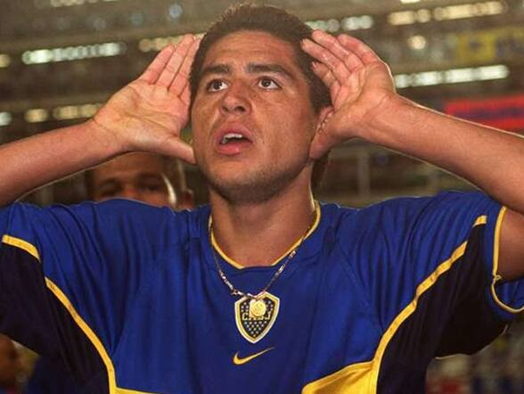 |
Juan Román Riquelme |
Mediocampista |
1996–2002, 2007–2014 |
11 |
| 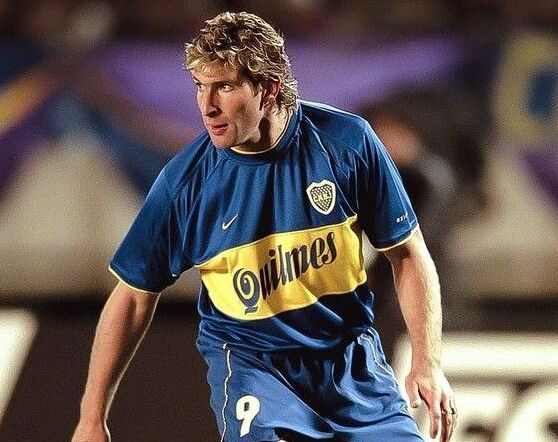 |
Martín Palermo |
Delantero |
1997–2000, 2004–2011 |
13 |
| 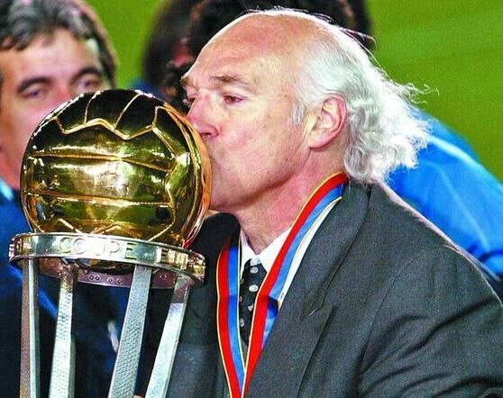 |
Carlos Bianchi |
Director Técnico |
1998–2001, 2003–2004, 2013–2014 |
9 |
| 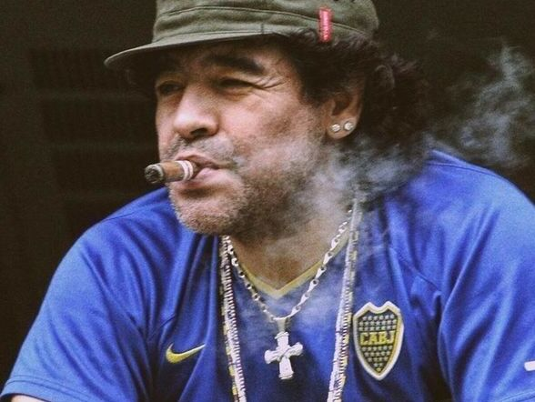 |
Diego Maradona |
Mediocampista |
1981–1982, 1995–1997 |
1 |
| 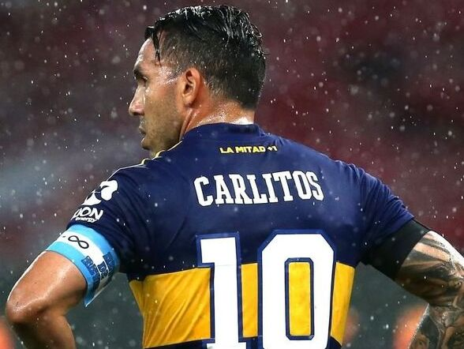 |
Carlos Tévez |
Delantero |
2001–2004, 2015–2016, 2018–2021 |
11 |
| 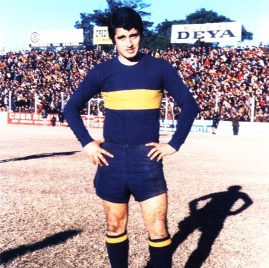 |
Clemente Rojas |
Delantero |
1963–1971 |
5 |
| 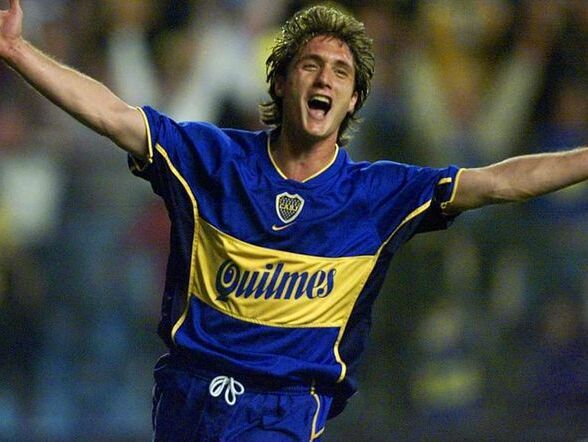 |
Guillermo Barros Schelotto |
Delantero |
1997–2007 |
16 |
| 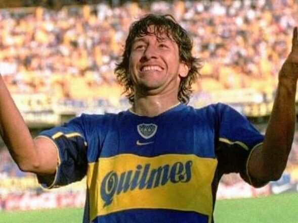 |
Jorge Bermúdez |
Defensor |
1997–2001 |
6 |
| 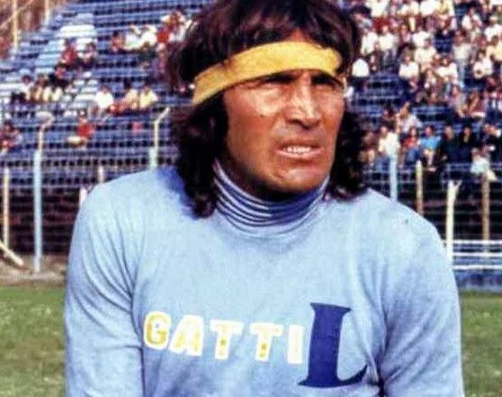 |
Hugo Gatti |
Arquero |
1976–1988 |
6 |
| 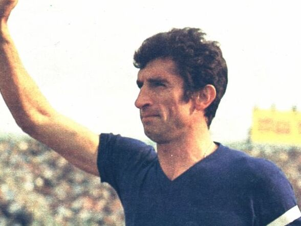 |
Antonio Rattín |
Mediocampista |
1956–1970 |
4 |
| 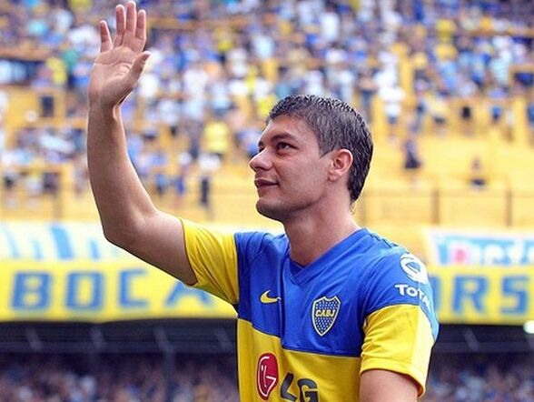 |
Sebastián Battaglia |
Mediocampista |
1998–2003, 2005–2011 |
17 |